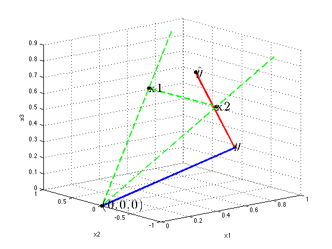

An illustration of least squares projection
function leastSquaresProjection()
setSeed(2);
n = 3;
d = 2;
W = 0.05*[1; 1];
X = [1 1 1; 2 -2 2]';
y = X*W + 5*randn(n,1);
What = X\y;
yHat = X*What;
for j=1:d
X(:,j) = X(:,j)/norm(X(:,j));
end
yHat = yHat/norm(yHat);
y = y/norm(y);
figure('Color',[1 1 1]); hold on;
axis on
view(-40,16);
grid on
xlabel('x1'); ylabel('x2'); zlabel('x3');
plotLines;
plotPoints;
labelPoints;
printPmtkFigure leastSquaresProj
function plotLines
prefs = {'Color','g','LineStyle','--','LineWidth',2};
line(X(1,:), X(2,:), X(3,:), prefs{:});
s = 1.5;
line([0 s*X(1,1)], [0 s*X(2,1)], [0 s*X(3,1)], prefs{:});
line([0 s*X(1,2)], [0 s*X(2,2)], [0 s*X(3,2)], prefs{:});
prefs = {'Color','b','LineWidth',3};
line([y(1) 0], [y(2) 0], [y(3) 0], prefs{:});
prefs = {'Color','r','LineWidth',3};
line([y(1) yHat(1)], [y(2) yHat(2)], [y(3) yHat(3)],prefs{:});
end
function plotPoints
pointPrefs = {'.k','MarkerSize',20};
plot3(0,0,0,pointPrefs{:});
plot3(X(1,1),X(2,1),X(3,1),pointPrefs{:});
plot3(X(1,2),X(2,2),X(3,2),pointPrefs{:});
plot3(yHat(1),yHat(2),yHat(3),pointPrefs{:});
plot3(y(1), y(2), y(3),pointPrefs{:});
end
function labelPoints
textPrefs = {'FontSize',22,'FontWeight','bold','Interpreter','latex'};
text(y(1), y(2), y(3), '$y$', textPrefs{:});
text(yHat(1), yHat(2), yHat(3), '$\hat{y}$' ,textPrefs{:});
text(0,0,0,'(0,0,0)', textPrefs{:});
text(X(1,1), X(2,1), X(3,1), 'x1', textPrefs{:});
text(X(1,2), X(2,2), X(3,2), 'x2', textPrefs{:});
end
end
